Prepare your visit.
So that everyone can enjoy the beauty of this place...
The Taj Mahal, as a UNESCO World Heritage Site and a major tourist attraction in India, is committed to being accessible to people with disabilities. Here is some relevant information:
Physical Accessibility
→ Access Ramps
Ramps are installed to facilitate access for visitors in wheelchairs, particularly at the main entrance and in key areas.
→ Wheelchairs
Wheelchairs are available free of charge upon request. You can obtain them at the site entrance.
→ Paving and surfaces
Some parts of the site, such as the gardens, are relatively flat and wheelchair-accessible. However, paved paths or stairs may present difficulties.
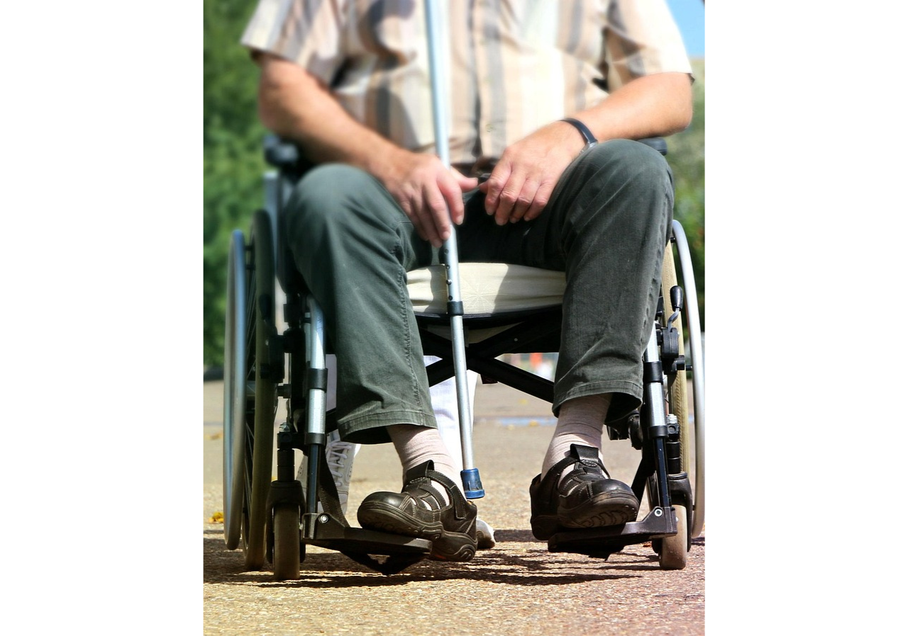
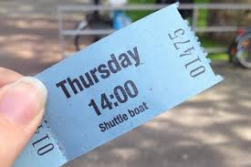
Ticket Office and Services
→ Discounted Rates
People with disabilities may be eligible for discounted admission tickets. A valid ID and proof of disability may be required.
→ Priority lines
Special lines may be available to avoid long waits.
Assistance
→ Companions
Companions are permitted to enter with visitors with disabilities. If necessary, professional guides can be hired to assist with navigating the site.
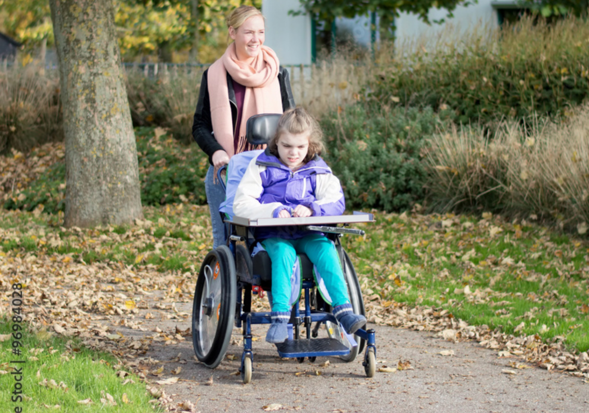
Practical advice
→ Visitor restrictions
Certain historic parts of the Taj Mahal may not be fully accessible due to site preservation efforts.
→ Visit during off-peak hours
It is recommended to visit early in the morning or late in the afternoon to avoid large crowds.
Our recommended itinerary.
Start of the tour - 9:00 AM:
Entrance & tour of the Taj Mahal
- Arrival at the main entrance.
- Ticket purchase (discount for people with reduced mobility).
- Walk to the monument through the gardens.
- Photo stop near the central pool.
Estimated duration: 1h30 to 2h
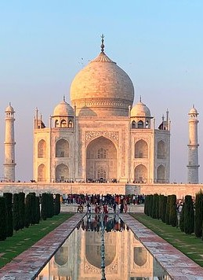
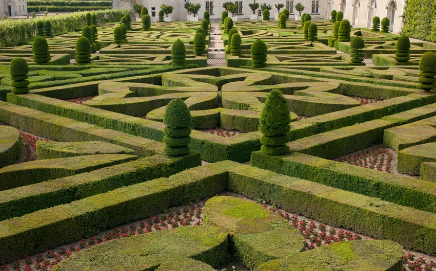
10:30 AM - Break and stroll through the gardens
- Rest in the shaded areas of the garden.
- Observe the landscape and local wildlife.
Estimated duration: 30 min
11:00 a.m. – Side mosques & viewpoints
- Exterior tour of the mosque or the jawab (symmetrical building).
- Magnificent view of the Taj in the morning light.
Estimated duration: 1 hour
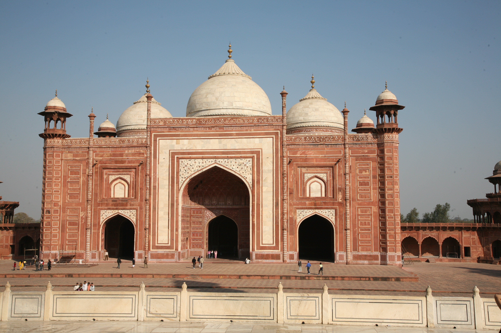
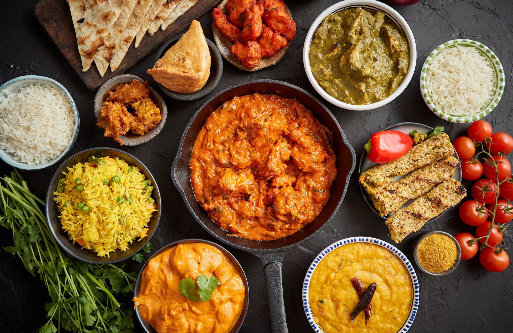
12:00 PM – Lunch with a view
- Leave the site and head to a nearby restaurant.
- Examples: [Esphahan (upscale traditional restaurant)], or local options with a view of the Taj.
Suggested duration: 1.5 hours
1:30 PM – Alternative view from Mehtab Bagh
- A peaceful, accessible garden.
- Spectacular view of the Taj Mahal from the opposite bank (perfect for photos).
Cross the Yamuna River (by car or tuk-tuk) to reach Mehtab Bagh.
Suggested duration: 45 min – 1 hr 30 min
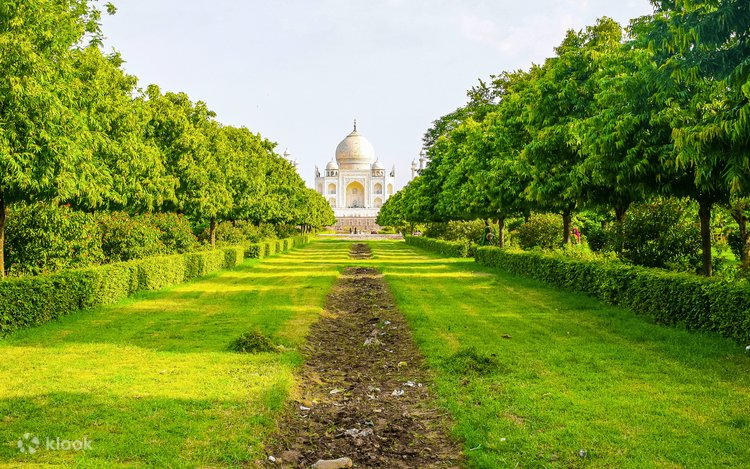

3:00 PM – Agra Fort
- Pavilions, inner courtyards, views of the Taj from Shah Jahan’s prison tower.
- Partially accessible site (paved areas).
Explore this UNESCO World Heritage Site, a former imperial residence.
Estimated duration: 1–1.5 hours
4:30 PM – Visit to the “Baby Taj” (Itimad-ud-Daulah)
- A miniature Taj made of white marble with a peaceful garden.
- Less touristy, ideal for relaxing.
- Accessible and rich in artistic details.
Suggested duration: 1 hour
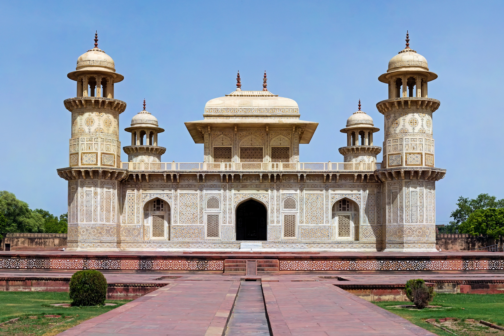
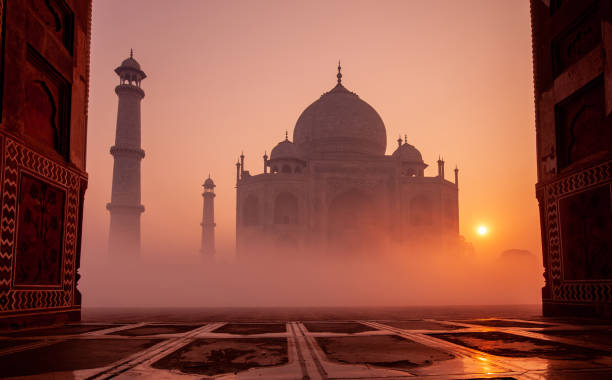
5:30 PM – Return or sunset at the Taj (optional)
Head back to Mehtab Bagh to admire the Taj Mahal at sunset if you still have the energy.
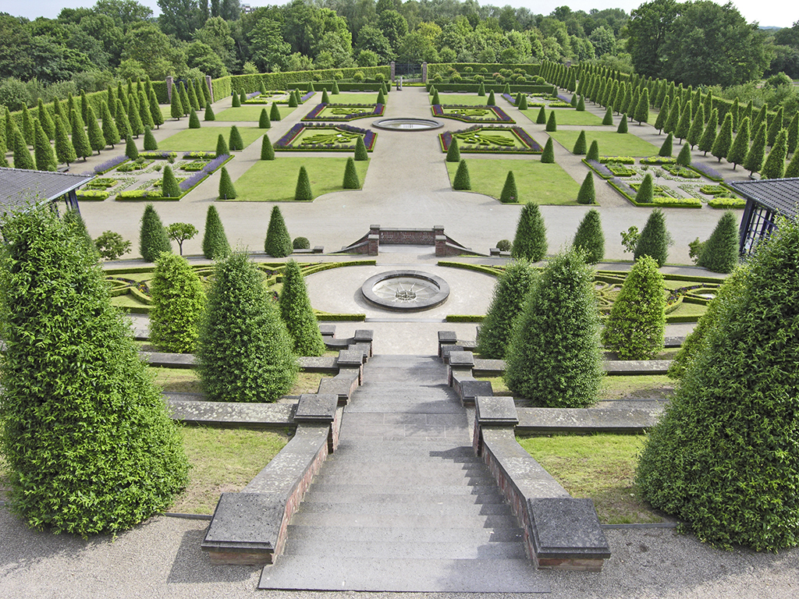